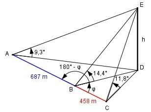

Aufgabe 227 Um die Höhe h eines Berges zu bestimmen, peilt man sie von drei Punkten A, B und C einer geraden Straße aus unter den Winkeln α = 9,3°,β = 14,4° und γ = 11,8° an. A und B liegen 687 m und B und C 458 m auseinander. Wie groß ist h?

Im Dreieck CDE: h tan 11,8° = ---- |*CD CD CD * tan 11,8° = h |:tan 11,8° h CD = ----------- tan 11,8° Im Dreieck BDE: h tan 14,4° = ---- |*BD BD BD * tan 14,4° = h |:tan 14,4° h BD = ------------ tan 14,4° Im Dreieck ADE: h tan 9,3° = ---- |*AD AD AD * tan 9,3° = h |:tan 9,3° h AD = ---------- tan 9,3° h ----------- CD tan 11.8° ---- = ------------ BD h ----------- tan 14,4° CD tan 14,4° ---- = ----------- |*BD BD tan 11,8° 0,2568 CD = --------- * BD = 1,2293 * BD 0,2089 h -------------- BD tan 14,4° ---- = -------------- AD h ------------- tan 9,3° BD tan 9,3° ---- = ------------ *AD AD tan 14,4° 0,1638 BD = --------- * AD = 0,6379 * AD |:0,6379 0,2568 BD AD = ---------- = 1,5674 * BD 0,6379 Im Dreieck ABD: cos (180° - φ) = - cos φ Cosinussatz: AD2 = (687 m)2 + BD2 - 2*687 m*BD*cos (180° - φ) (1,5674 * BD)2 = 471 969 m2 + BD2 - 1 374 * BD * (- cos φ ) 2,4567 * BD2 = 471 969 m2 + BD2 + 1374 * BD * cos φ |-471 969 m2 2,4567 * BD2 - 471 969 m2 = = BD2 + 1 374 * BD * cos φ |- BD2 1,4567 * BD2 - 471 969 m2 = = 1 374 * BD * cos φ | : 1 374 * BD 1,4567 * BD2 - 471 969 m2 cos φ = ---------------------------- 1 374 * BD Im Dreieck BCD: Cosinussatz: CD2 = (458 m)2 + BD2 - 2 * 458 m * BD * cos φ (1,2293 * BD)2 = 209 764 m2 + BD2 - 916*BD*cos φ 1,5112 * BD2 = 209 764 m2 + BD2 - - 916 * BD * cos φ |-1,5112 * BD2 0 = 209 764 m2 - 0,5112 * BD2 - - 916 * BD * cos φ | + 916 * BD * cos φ 916 * BD * cos = 209 764 m2 - 0,5112*BD2 |:916*BD 209 764 m2 - 0,5112 * BD2 cos φ = ---------------------------- 916 * BD Gleichgesetzt: 209 764 m2 - 0,5112 * BD2 --------------------------- = 916 * BD 1,4567 * BD2 - 471 969 m2 = ---------------------------- |*916*BD 1 374 * BD 209 764 - 0,5112 * BD2 = (1,4567 * BD2 - 471 969 m2) * 916 * BD = ---------------------------------------- 1 374 * BD 209 764 m2 - 0,5112 * BD2 = = (1,4567 * BD2 - 471 969 m2) * 0,6667 209 764 - 0,5112 * BD2 = = 0,9712 * BD2 - 314 661,7 m2 | +0,5112 * BD2 209764 m2 = 1,4824 * BD2 - 314661,7 m2 |-209764 m2 1,4824 * BD2 = 524 425,7 m2 |:,4824 BD2 = 352 768 m2|√ BD = 593,9 m h BD = ----------- |*tan 14,4° tan 14,4° h = BD * tan 14,4° = 593,9 m * 0,2568 = 152,5 m